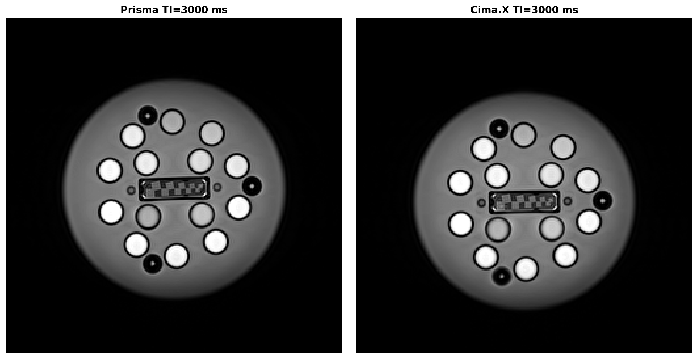
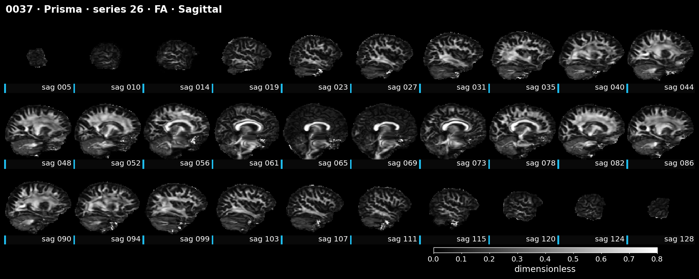
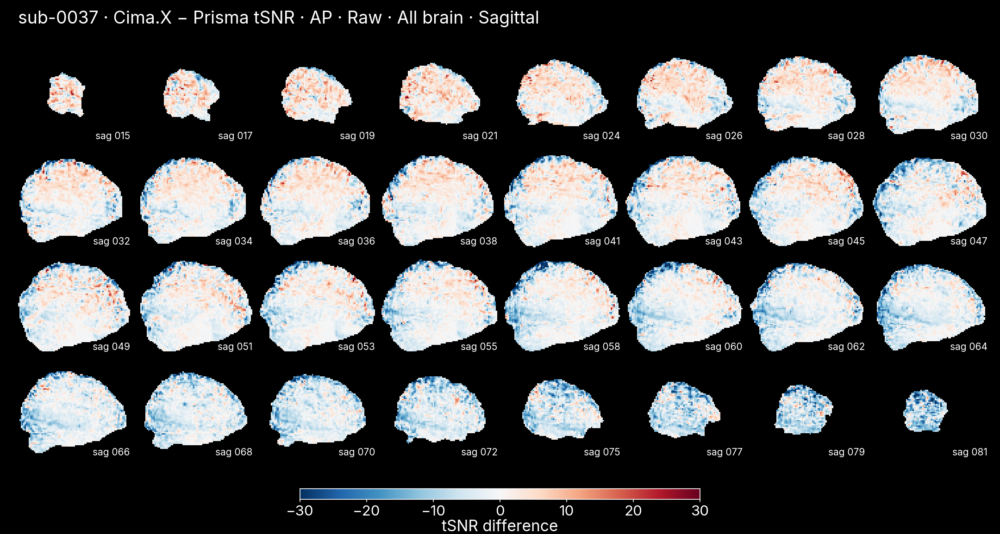
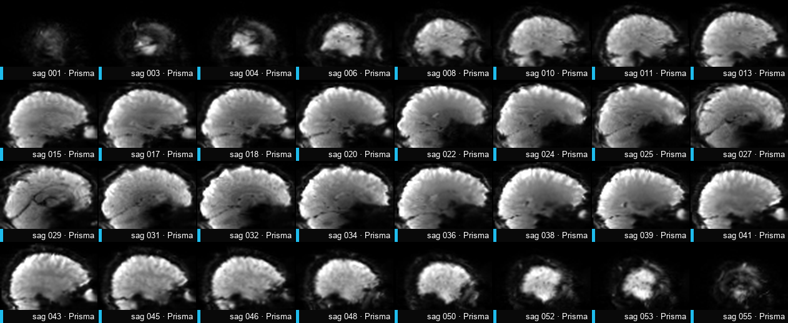

Prisma-to-Cima.X upgrade comparison
We compared phantom measurements and human anatomical, diffusion and functional MRI before and after the Prisma-to-Cima.X upgrade to assess whether the upgraded system provides comparable measurements.
Phantom
Phantom measurements largely agree. Distortion was greater at the inferior edge (toward the feet) on Cima.X, although the scan coordinates were about 1–1.4 cm lower than on Prisma.
Human scans
Anatomical scans are broadly consistent. Cortical gray-matter volumes were higher in the one participant scanned on both systems, and MRIQC contrast-to-noise ratio was lower in the new cohort. We should repeat more participants with existing Prisma T1w scans on Cima.X and consider asking Siemens to optimize the MPRAGE sequence.
Diffusion quality is broadly comparable. High-b diffusion looks promising for detecting additional fiber orientations, but needs further validation. Multishell microstructure analysis, including soma and neurite density imaging (SANDI), is still pending.
Resting-state connectivity is broadly preserved, with some differences in signal stability and greater slow gray-matter fluctuations on Cima.X. Multi-echo EPI testing is still pending.
Block-design fMRI finger representation maps are visually comparable. The M1 and S1 finger maps are accompanied by slightly higher overall tSNR on Cima.X. The 1.6 mm maps look messy, and tSNR differences are mixed.
Event-design fMRI remains inconclusive. Cima.X has lower nuisance-cleaned tSNR in V1–V3, but scanner and protocol rankings for task fit depend strongly on HRF shape and flexibility. Fixed SPM fits favor Prisma; adding timing and width terms can favor Cima.X. Prisma’s higher full-model R² partly reflects nuisance fit. With one participant and mixed results, we cannot establish an overall scanner advantage.
Report pages
Matched and unpaired results are never pooled. Participant-level scans, protocol tests and phantom measurements are labelled separately throughout.
1 Phantom MRI
The same Model 130 phantom was measured on Prisma and Cima.X. New qCal-MR 1.7.44 studies put T1, T2, SNR, geometry and temperature on matched inputs.
1.1 Matched phantom images

1.2 T1 relaxometry
View the 14 T1 measurements
| NIST T1 (ms) | Prisma (ms) | Prisma bias | Cima.X (ms) | Cima.X bias | Cima.X vs Prisma |
|---|---|---|---|---|---|
| 1957 | 2017 | +3.02% | 2009 | +2.63% | −0.40% |
| 1360 | 1646 | +21.0% | 1641 | +20.6% | −0.30% |
| 1007 | 1106 | +9.85% | 1096 | +8.83% | −0.90% |
| 697 | 728 | +4.36% | 721 | +3.45% | −0.96% |
| 488 | 491 | +0.55% | 484 | −0.81% | −1.43% |
| 343 | 356 | +3.81% | 353 | +2.71% | −0.84% |
| 241 | 253 | +5.13% | 252 | +4.55% | −0.40% |
| 175 | 181 | +3.38% | 180 | +3.00% | −0.55% |
| 121 | 125 | +3.74% | 125 | +3.76% | 0.00% |
| 85.0 | 88.3 | +3.86% | 87.7 | +3.17% | −0.68% |
| 60.0 | 63.9 | +6.50% | 62.6 | +4.42% | −2.03% |
| 42.7 | 45.2 | +5.77% | 44.1 | +3.19% | −2.43% |
| 30.3 | 32.2 | +6.41% | 30.3 | +0.045% | −5.90% |
| 21.3 | 35.7 | +67.9% | 36.2 | +70.0% | +1.40% |
1.3 T2 relaxometry
View the 13 T2 measurements
| NIST T2 (ms) | Prisma (ms) | Prisma bias | Cima.X (ms) | Cima.X bias | Cima.X vs Prisma |
|---|---|---|---|---|---|
| 591 | 587 | −0.70% | 581 | −1.71% | −1.02% |
| 281 | 289 | +2.93% | 286 | +1.62% | −1.04% |
| 184 | 193 | +4.81% | 191 | +4.03% | −1.04% |
| 119 | 125 | +5.64% | 125 | +5.04% | 0.00% |
| 93.8 | 108 | +15.2% | 107 | +14.3% | −0.93% |
| 66.5 | 77.6 | +16.6% | 76.8 | +15.4% | −1.03% |
| 46.6 | 54.7 | +17.4% | 54.1 | +16.1% | −1.10% |
| 31.4 | 35.0 | +11.6% | 34.1 | +8.71% | −2.57% |
| 20.4 | 22.4 | +10.2% | 21.5 | +5.46% | −4.02% |
| 15.5 | 16.3 | +5.54% | 15.3 | −1.30% | −6.13% |
| 11.0 | 10.8 | −1.82% | 9.96 | −9.73% | −7.78% |
| 7.60 | 7.83 | +3.07% | 7.59 | −0.090% | −3.07% |
| 5.36 | 6.04 | +12.6% | 5.71 | +6.56% | −5.46% |
Across the seven T2 vials with references above 45 ms, Cima.X has lower signed bias than Prisma by 1.01 percentage points on average. The off-protocol echo train limits absolute T2 calibration. The T1 and T2 vial tests check relaxation measurement and scanner agreement; they do not directly measure BOLD response. The study’s gradient-echo EPI BOLD signal is primarily T2*-weighted (sequence comparison).
1.4 Geometric distortion
View the 7 region values
| Region | Prisma mean (mm) | Prisma worst (mm) | Cima.X mean (mm) | Cima.X worst (mm) |
|---|---|---|---|---|
| Inferior | 0.40 | 0.84 | 0.71 | 1.65 |
| Superior | 0.55 | 0.93 | 0.34 | 0.78 |
| Posterior | 0.27 | 0.33 | 0.37 | 0.77 |
| Inner | 0.17 | 0.31 | 0.20 | 0.54 |
| Anterior | 0.26 | 0.37 | 0.31 | 0.42 |
| Left | 0.19 | 0.28 | 0.27 | 0.40 |
| Right | 0.20 | 0.34 | 0.24 | 0.37 |
1.5 Image position
Source: first frame of each local enhanced DICOM geometry series · ImagePositionPatient (P222,P224) · head-first supine orientation.
1.6 Proton-density SNR
These single-pair SNR estimates are not yet reliable for comparing scanners because the vial-level deviations are large and inconsistent between systems; we should acquire multiple repeat pairs and review the acquisition and noise estimation with qCal support before interpreting scanner differences.
View the 14 SNR measurements and residuals
| Vial | Prisma SNR | Prisma residual | Cima.X SNR | Cima.X residual | Ratio |
|---|---|---|---|---|---|
| 5% | 110 | −39.2% | 83.3 | −27.9% | 0.76 |
| 10% | 189 | −17.7% | 62.4 | −59.0% | 0.33 |
| 15% | 308 | +10.6% | 216 | +14.3% | 0.70 |
| 20% | 280 | −14.4% | 238 | +5.5% | 0.85 |
| 25% | 383 | +1.9% | 278 | +6.0% | 0.73 |
| 30% | 498 | +17.2% | 245 | −18.0% | 0.49 |
| 35% | 554 | +17.0% | 421 | +25.4% | 0.76 |
| 40% | 480 | −8.1% | 553 | +48.5% | 1.15 |
| 50% | 448 | −27.7% | 600 | +34.6% | 1.34 |
| 60% | 869 | +21.2% | 492 | −5.2% | 0.57 |
| 70% | 980 | +20.3% | 306 | −48.3% | 0.31 |
| 80% | 1155 | +26.6% | 423 | −36.5% | 0.37 |
| 90% | 614 | −39.2% | 827 | +11.9% | 1.35 |
| 100% | 1126 | +1.7% | 981 | +20.8% | 0.87 |
Extra details
All values are from qCal-MR 1.7.44 studies created 7 October 2026. The same Model 130 phantom was used throughout. Study and calculation identifiers are listed below.
| Measure | Prisma study and calculation | Cima.X study and calculation |
|---|---|---|
| Inversion-recovery T1 | prisma-core · 49554 | cimax-core · 49567 |
| T2 | prisma-core · 49555 | cimax-core · 49568 |
| PD SNR | prisma-core · 49556 | cimax-core · 49569 |
| Geometric distortion | prisma-geom · 49549, 49550 | cimax-geom · 49561, 49562, 49563 |
| Phantom temperature | prisma-geom · 49548 | cimax-geom · 49560, 49559 |
| Variable flip angle T1 (excluded) | prisma-core · 49553 | cimax-core · 49566 |
Phantom temperature matched across sessions (start 22.8 °C, end 24.0 °C on both); the core studies use the 22.8 °C reading for reference correction.
Volume scale factors by repeat: Prisma 1.00255, 1.00250; Cima.X 1.00353, 1.00348, 1.00204. Cima.X series 45 also has a slightly different image origin (ImagePositionPatient z = 112.5 mm versus 110.9 mm for series 2 and 6); these observations do not establish the cause of the scale-factor spread.
Five of seven geometry regions agree within 0.25 mm. Posterior worst-marker displacement is 0.77 mm on Cima.X versus 0.33 mm on Prisma; Superior runs the other way, at 0.78 versus 0.93 mm. The first-frame Cima.X image origins have z coordinates 12.5–14.1 mm lower than Prisma. This is a scan-prescription difference; ImagePositionPatient alone cannot determine whether the physical phantom was repositioned or how far its markers were from isocentre.
At 80 mm inferior, this region roughly covers the cerebellum, brainstem and skull base for a normally positioned head. Neither scanner’s geometry series applied distortion correction; all five ImageType and FrameType values end in NONE. Both used a 391 Hz/pixel readout where qCal expects at least 430, so these are uncorrected geometry measurements.
Matched qCal results
| Measure | Prisma | Cima.X | What the comparison says |
|---|---|---|---|
| Geometric distortion, 56 markers | Mean 0.24 mm; P95 0.53 mm; worst 0.93 mm | Mean 0.29 mm; P95 0.76 mm; worst 1.65 mm | Most regions are close. At the inferior edge, the worst markers are 0.84 mm on Prisma and 1.65 mm on Cima.X. Confirm this on head data before pooling lower-brain measurements. |
| Volume scale factor | 1.00255, 1.00250 | 1.00353, 1.00348, 1.00204 | Repeat geometry results are unchanged from the earlier report. Both used 391 Hz/pixel readout bandwidth, below qCal's 430 Hz/pixel recommendation. |
| Phantom temperature | Start 22.8 ± 1.3 °C; end 24.0 ± 1.1 °C | Start 22.8 ± 1.3 °C; middle 22.8 ± 1.3 °C; end 24.0 ± 1.1 °C | The sessions match. The new core studies use the 22.8 °C starting reading for reference correction on both scanners. |
| Inversion-recovery T1 | Slope 1.084; R² 0.992 | Slope 1.080; R² 0.992 | About 1% scanner agreement for T1 above 100 ms. Both share the reference-bias pattern. Bias percentages shift by about 0.3 percentage point from the earlier 23.1 °C correction; scanner agreement does not. |
| T2, multi-echo spin echo | Slope 0.994; R² 0.999 | Slope 0.985; R² 0.999 | About 1% scanner agreement above 45 ms. Both used 12–384 ms echoes instead of qCal's expected 10–320 ms, and both lost the first echo to poor fit. Treat the paired comparison as valid, but not the absolute T2 values as calibrated. |
| Proton-density SNR | Rises with proton density; residuals up to 39% | Rises with proton density; residuals up to 59% | Not answered. Vial deviations occur at different positions on the two scanners (residual correlation −0.59; 6 of 14 share a sign). Acquisition parameters and the 16 head receive elements matched. A single pair per scanner cannot resolve a change beneath this scatter. |
Methods
Acquisition and analysis. (§1.1) We scanned the same Model 130 system phantom on Prisma and Cima.X and analyzed both sessions with qCal-MR 1.7.44. The comparison included inversion-recovery T1, multi-echo spin-echo T2, geometric distortion and proton-density SNR. Both studies used the initial phantom temperature of 22.8 °C for reference correction; the final recorded temperature was 24.0 °C.
Relaxation measurements. (§1.2, §1.3) qCal estimated T1 from ten inversion times spanning 35–3,000 ms in 14 nickel-chloride vials. T2 used 32 echoes from 12–384 ms, excluding the first echo and the vial whose reference had been withdrawn. We expressed errors relative to the temperature-corrected NIST references. The T2 echo train matched across scanners but differed from qCal’s recommended acquisition, which limits interpretation of absolute accuracy.
Geometry. (§1.4, §1.5) qCal measured three-dimensional displacement from reference marker positions in two Prisma and three Cima.X acquisitions. The regional plot summarizes the 55 noncentral markers in seven regions: inner, left, right, anterior, posterior, superior and inferior. The central marker served as the reference. We checked image position and distortion-correction metadata to interpret differences in placement.
Proton-density SNR. (§1.6) qCal used the difference between two TE 10 ms spin-echo images to estimate SNR in 14 water vials. We fitted SNR against proton density by linear regression with an intercept and expressed each vial’s residual relative to its fitted value.
Sequence details
Prisma
| Series Description | Voxel (mm) | TR (s) | TE (ms) | MB | N subjects | Runs |
|---|---|---|---|---|---|---|
| 3D gradient echo · geometry XNAT Study acquisition archiveOriginal series and acquisition detailsOriginal Series Description Acquisition type: 3D TI (ms) — Series numbers 2, 41 | 0.9766 × 0.9766 × 1 | 0.0077 | 3.43 | 1 | 0 | 2 |
| Inversion-recovery spin echo · T1 XNAT Study acquisition archiveOriginal series and acquisition detailsOriginal Series Description Acquisition type: 2D TI (ms) 35, 75, 100, 125, 150, 250, 1000, 1500, 2000, 3000 Series numbers 14, 15, 16, 17, 18, 19, 20, 21, 22, 23 | 0.9766 × 0.9766 × 6 | 4.5 | 7.9 | 1 | 0 | 10 |
| Multi-echo spin echo · T2 XNAT Study acquisition archiveOriginal series and acquisition detailsOriginal Series Description Acquisition type: 2D TI (ms) — Series numbers 6 | 0.9766 × 0.9766 × 6 | 5 | 12–384 (32 echoes) | 1 | 0 | 1 |
| Proton-density spin echo · repeat-image SNR XNAT Study acquisition archiveOriginal series and acquisition detailsOriginal Series Description Acquisition type: 2D TI (ms) — Series numbers 37, 38 | 0.9766 × 0.9766 × 6 | 5 | 10 | 1 | 0 | 2 |
Cima.X
| Series Description | Voxel (mm) | TR (s) | TE (ms) | MB | N subjects | Runs |
|---|---|---|---|---|---|---|
| 3D gradient echo · geometry XNAT Study acquisition archiveOriginal series and acquisition detailsOriginal Series Description Acquisition type: 3D TI (ms) — Series numbers 2, 6, 45 | 0.9766 × 0.9766 × 1 | 0.0077 | 3.43 | 1 | 0 | 3 |
| Inversion-recovery spin echo · T1 XNAT Study acquisition archiveOriginal series and acquisition detailsOriginal Series Description Acquisition type: 2D TI (ms) 35, 75, 100, 125, 150, 250, 1000, 1500, 2000, 3000 Series numbers 18, 19, 20, 21, 22, 23, 24, 25, 26, 27 | 0.9766 × 0.9766 × 6 | 4.5 | 7.9 | 1 | 0 | 10 |
| Multi-echo spin echo · T2 XNAT Study acquisition archiveOriginal series and acquisition detailsOriginal Series Description Acquisition type: 2D TI (ms) — Series numbers 11 | 0.9766 × 0.9766 × 6 | 5 | 12–384 (32 echoes) | 1 | 0 | 1 |
| Proton-density spin echo · repeat-image SNR XNAT Study acquisition archiveOriginal series and acquisition detailsOriginal Series Description Acquisition type: 2D TI (ms) — Series numbers 41, 42 | 0.9766 × 0.9766 × 6 | 5 | 10 | 1 | 0 | 2 |
System phantom; 0 human subjects.
2 T1w and FreeSurfer
Matched and cohort views Participant 0037 provides the matched FreeSurfer comparison. The T1w benchmark includes every usable new Cima.X anatomical scan.
2.1 Cohort MRIQC
All 13 participants with usable Cima.X T1w MRIQC are included; functional or diffusion availability does not affect inclusion.
2.2 Registered T1w images
Surface area and subcortical segmentation are extremely consistent and cortical thickness is well reproduced. Cortical gray volume shows an approximately 7% Cima.X increase, so scanner should be modeled or harmonized before pooling those volumes. Correlation alone is insufficient for volume agreement because differently sized anatomical regions naturally span a broad range; the paired percentage differences reveal the offset.
2.3 Regional contrast and FreeSurfer measures
Methods
Cohort image quality. (§2.1) We compared MRIQC measurements from 13 Cima.X participants with a historical Prisma reference of 246–264 participants, depending on the metric. Repeats were averaged within participant. We compared contrast-to-noise ratio, total SNR, foreground-to-background energy ratio and entropy-focus criterion using two-sided Welch t-tests, with Holm correction across the four comparisons. The Prisma reference was summarized by its fifth and 95th percentiles. The cohorts were not matched participant by participant.
Anatomical comparison. (§2.2, §2.3) The individual comparison used sub-0037. We aligned the bias-corrected T1w images with an inverse-consistent rigid registration (Reuter et al., 2010), resampling each image once into a common halfway space. FreeSurfer 7.3.2 processed each scanner’s own T1w image independently (Fischl, 2012).
Regional measures. (§2.3) We extracted white–gray contrast, cortical thickness, gray-matter volume and surface area for 68 cortical regions, and volumes for 39 segmented structures with positive values on both scanners. We paired corresponding regions and calculated Pearson correlations. For morphometry, regional percentage differences were relative to the average of the two scanner values and summarized by their median absolute value. Aggregate shifts compared the summed regional values on Cima.X with those on Prisma.
Sequence details
Prisma
Cohort MRIQC · 264 subjects
| Series Description | Voxel (mm) | TR (s) | TE (ms) | MB | N subjects | Runs |
|---|---|---|---|---|---|---|
| 3D T1-weighted MPRAGE XNAT Study acquisition archiveOriginal series and acquisition detailsOriginal Series Description Acquisition type: 3D | 0.8 × 0.8 × 0.8 | 2.4 | 3.45 | 1 | 19 | 19 |
| 3D T1-weighted MPRAGE XNAT Study acquisition archiveOriginal series and acquisition detailsOriginal Series Description Acquisition type: 3D | 0.8 × 0.8 × 0.8 | 2.4 | 3.45 | 1 | 1 | 1 |
| T1-weighted structural MRI XNAT URI not retained | 0.8 × 0.8 × 0.8 | — | — | — | 219 | 219 |
| T1-weighted structural MRI XNAT URI not retained | 0.9 × 0.8 × 0.8 | — | — | — | 25 | 25 |
Scans used in the matched analyses
| Series Description | Voxel (mm) | TR (s) | TE (ms) | MB | N subjects | Runs |
|---|---|---|---|---|---|---|
| 3D T1-weighted MPRAGE XNAT Study acquisition archiveOriginal series and acquisition detailsOriginal Series Description Acquisition type: 3D | 0.8 × 0.8 × 0.8 | 2.4 | 3.45 | 1 | 1 | 1 |
Cima.X
Cohort MRIQC · 13 subjects
| Series Description | Voxel (mm) | TR (s) | TE (ms) | MB | N subjects | Runs |
|---|---|---|---|---|---|---|
| 3D T1-weighted MPRAGE XNAT Study acquisition archiveOriginal series and acquisition detailsOriginal Series Description Acquisition type: 3D | 0.8 × 0.8 × 0.8 | 2.4 | 3.45 | 1 | 13 | 13 |
Scans used in the matched analyses
| Series Description | Voxel (mm) | TR (s) | TE (ms) | MB | N subjects | Runs |
|---|---|---|---|---|---|---|
| 3D T1-weighted MPRAGE XNAT Study acquisition archiveOriginal series and acquisition detailsOriginal Series Description Acquisition type: 3D | 0.8 × 0.8 × 0.8 | 2.4 | 3.45 | 1 | 1 | 1 |
N subjects counts distinct participants within each row; participants can appear in more than one row. — indicates a value not retained in the source export.
3 Diffusion MRI
Registered scalar and direction maps for participant 0037, followed by cohort MRIQC comparison.
3.1 Cohort MRIQC
MRIQC version 24.1.0.dev0+gd5b13cb5.d20240826: SNR divides mean corpus-callosum signal by the MAD-derived noise scale of b0 signal inside the same mask. Best averages the gradient volumes closest to AP and SI; worst uses the volume closest to LR. The redundant shell1 rows describe b0 and are omitted. Below Prisma P5: 0960 worst 1.27 vs 1.31; 0968 best 2.63 vs 3.18 and worst 1.28 vs 1.31.
3.2 Registered DWI scalar and direction maps

3.3 Illustrative voxel and whole-WM peak detection
One participant, 0037. Cima.X ARI protocol (series 38; nominal max b = 2,000 s/mm²) versus high-b protocol (series 46; nominal max b = 10,000 s/mm²); both 105 volumes, 2mm voxels, GQI sampling length 1.25.
3.4 Centrum semiovale: atlas-defined crossing region
The selected high-b third peak was 65% of the primary peak. This example is illustrative and selection-biased.
At relative threshold 0.25, whole-WM second-peak detection is 68.6% for the ARI protocol versus 69.2% for the high-b protocol; third-peak detection is 34.6% versus 54.8%.
Schilling et al. (2018) found false-positive and false-negative peak extraction errors and limited dependence on acquisition parameters across the tested methods (CSD, QBI, DOT, PAS, NODDI; not GQI). This supports a peak-count caveat, not validation of our high-b GQI result. Source paper.
3.5 Centrum semiovale tractography
Methods
Cohort image quality. (§3.1) We compared MRIQC measurements from 12 Cima.X participants with 251 historical Prisma participants, averaging repeats within participant. Metrics were corpus-callosum b0 SNR, best- and worst-direction SNR at b =1,000 s/mm², and global spike count. We used two-sided Welch t-tests and Holm correction across four comparisons. In these saved outputs, SNR uses mean signal within the corpus-callosum mask divided by the median-absolute-deviation-derived noise scale of b0 signal in that mask. Best-direction SNR averages directions closest to the anterior–posterior and superior–inferior axes; worst-direction SNR uses the left–right axis.
Individual acquisitions and processing. (§3.2) The individual displays used sub-0037. Prisma and Cima.X scans using the ARI protocol each contained five b0 images and 50 directions at each of b =1,000 and 2,000 s/mm². Cima.X high-b used five b0 images and 50 directions at each of b =5,000 and 10,000 s/mm², at approximately 2 mm resolution. Scalar maps for the ARI protocol came from TractoFlow. High-b preprocessing included MP-PCA denoising, Gibbs-ringing correction, susceptibility correction, eddy-current and motion correction with outlier replacement, and bias-field correction. DSI Studio GQI used sampling-length ratio 1.25 and ODF resolving, with additional DSI bias correction disabled for high-b.
Registered maps. (§3.2) We rigidly aligned the ARI protocol scans into a common halfway space, resampling each once. Mosaics use matched slices, a shared brain crop and identical scanner scales within each metric. Apparent-fiber-density maps use the pair-shared response S0. High-b FA-like and direction-color maps are qualitative GQI derivatives. Direction colors encode left–right in red, anterior–posterior in green and superior–inferior in blue.
Orientation peaks. (§3.3) The illustrative native Cima.X voxel (62, 50, 52; 1-based indices) was selected for its two-to-three-peak transition. Each ODF was minimum-subtracted and normalized to its own maximum for shape comparison. The whole-white-matter curves used the same saved DSI Studio peak estimator in 45,960 voxels with common mask coverage and positive primary peaks in both acquisitions. We measured the fraction whose second or third peak reached relative thresholds from 0.10–0.50 in steps of 0.05. Peak counts depend on reconstruction and threshold settings.
Centrum semiovale and tractography. (§3.4, §3.5) We defined a crossing seed from HCP842 corticospinal, superior longitudinal fasciculus and corpus-callosum binary masks, using each hemisphere’s CST–SLF intersection with the callosal mask. Atlas masks were overlaid on registered T1w images by nearest-neighbor resampling. Tracking used 50,000 seed attempts, Otsu factor 0.6, 60° turning angle, 1 mm steps, smoothing 0.2 and lengths of 20–300 mm, without topology-informed pruning or endpoint constraints. The screenshot compares trajectories across the three acquisitions as a visual check.
Sequence details
Prisma
Cohort MRIQC · 251 subjects
| Series Description | Voxel (mm) | TR (s) | TE (ms) | MB | N subjects | Runs |
|---|---|---|---|---|---|---|
| Diffusion-weighted EPI · b = 1,000 / 2,000 XNAT Study acquisition archiveOriginal series and acquisition detailsOriginal Series Description Acquisition type: 2D | 2.019 × 2.019 × 2 | 3.2 | 74 | 3 | 19 | 19 |
| Diffusion-weighted MRI · historical reference XNAT URI not retained | — | — | — | — | 232 | 232 |
Scans used in the matched analyses
| Series Description | Voxel (mm) | TR (s) | TE (ms) | MB | N subjects | Runs |
|---|---|---|---|---|---|---|
| Diffusion-weighted EPI · b = 1,000 / 2,000 XNAT Study acquisition archiveXNAT Study acquisition archiveOriginal series and acquisition detailsOriginal Series Description Acquisition type: 2D | 2.019 × 2.019 × 2 | 3.2 | 74 | 3 | 2 | 2 |
| Diffusion-weighted EPI · b = 1,000 / 2,000 XNAT Study acquisition archiveOriginal series and acquisition detailsOriginal Series Description Acquisition type: 2D | 2.019 × 2.019 × 2 | 3.2 | 79 | 3 | 1 | 1 |
Cima.X
Cohort MRIQC · 12 subjects
| Series Description | Voxel (mm) | TR (s) | TE (ms) | MB | N subjects | Runs |
|---|---|---|---|---|---|---|
| Diffusion-weighted EPI · b = 1,000 / 2,000 XNAT Study acquisition archiveOriginal series and acquisition detailsOriginal Series Description Acquisition type: 2D | 2.019 × 2.019 × 2 | 3.2 | 74 | 3 | 12 | 12 |
Scans used in the matched analyses
| Series Description | Voxel (mm) | TR (s) | TE (ms) | MB | N subjects | Runs |
|---|---|---|---|---|---|---|
| Diffusion-weighted EPI · b = 1,000 / 2,000 XNAT Study acquisition archiveXNAT Study acquisition archiveOriginal series and acquisition detailsOriginal Series Description Acquisition type: 2D | 2.019 × 2.019 × 2 | 3.2 | 74 | 3 | 2 | 2 |
| Diffusion-weighted EPI · b = 1,000 / 2,000 XNAT Study acquisition archiveOriginal series and acquisition detailsOriginal Series Description Acquisition type: 2D | 2.019 × 2.019 × 2 | 3.2 | 74 | 3 | 1 | 1 |
| Diffusion-weighted EPI · b = 5,000 / 10,000 XNAT Study acquisition archiveOriginal series and acquisition detailsOriginal Series Description Acquisition type: 2D | 2.019 × 2.019 × 2 | 3.8 | 75 | 3 | 1 | 1 |
N subjects counts distinct participants within each row; participants can appear in more than one row. — indicates a value not retained in the source export.
4.1 Functional MRI — resting-state
Four participants, 26 scans and seven matched participant–direction pairs. Repeat runs are averaged within participant and direction; the registered image comparison shows sub-0037.
4.1.1 Cohort MRIQC
Every participant with usable functional MRIQC contributes, whether or not T1w or diffusion data are available.
Available Cima.X participants: raw functional MRIQC 12; post-fMRIPrep gray-matter tSNR 11. Historical Prisma reference coverage is metric-dependent (up to 215 participants).
4.1.2 Resting-state connectivity
Question: How similar are the resting-state connectivity patterns on Prisma and Cima.X? Select the group average or one participant to compare the same brain regions side by side. The correlation above the matrices updates with the selection.
Group average · Cross-scanner matrix correlation: r=0.82. Seven matched participant-direction pairs from four people.
4.1.3 Temporal signal stability
4.1.4 Frequency spectra of resting-state fMRI time courses
4 participants · 26 scans · 7 matched participant–direction pairs
Gray-matter fluctuation power was higher on Cima.X in three of four participants (median Cima.X/Prisma ratio 1.17), with a larger difference in the 0.01–0.1 Hz band (median ratio 1.34). Raw background variability was similar between scanners (median ratio 1.01). The spectra summarize BOLD fluctuations after trend and motion removal; scanner and session differences were not separated in this comparison.
4.1.5 Spatial tSNR maps
Selected receive elements: Prisma HC1–7; Cima.X HC1–6.

4.1.6 Registered BOLD temporal means

Methods
Acquisitions and preprocessing. (§4.1.1) The matched sample comprised sub-0037, sub-0378, sub-0592 and sub-0593. All four had matched anterior–posterior (AP) scans; three also had matched posterior–anterior (PA) scans. The tSNR and spectral analyses used 26 standard-protocol runs, each with 490 volumes at TR 0.7 s. We used existing fMRIPrep derivatives (Esteban et al., 2019), with analysis space specified below. Repeats were averaged within participant, scanner and direction, giving four AP and three PA comparisons from four participants. Sub-0592 had no matched Cima.X PA acquisition.
Cohort image quality. (§4.1.1) We compared functional MRIQC measurements from 12 Cima.X participants with a historical reference of 215 Prisma participants. Repeats were averaged within participant and direction. Temporal SNR, mean framewise displacement and phase-encoding ghost ratio were compared separately for AP and PA using two-sided Welch t-tests and Holm correction across the six comparisons.
Connectivity. (§4.1.2) XCP-D 26.1.1 processed the fMRIPrep 24.1.1 derivatives using aCompCor without global-signal regression (Mehta et al., 2024). It excluded non-steady-state samples, censored frames above 0.2 mm framewise displacement, required at least 240 s of retained data and applied a 0.01–0.08 Hz band-pass filter without spatial smoothing. The available matched matrices contributed 23 runs. We calculated Pearson correlations between 4S156Parcels regional signals and averaged repeats in Fisher-z space within participant, scanner and direction. Individual displays averaged matched directions equally; the group display averaged the seven participant–direction matrices. Cross-scanner similarity compares corresponding off-diagonal cells and is descriptive. A separate 36P model including global-signal regression was retained as a sensitivity analysis.
Temporal signal stability. (§4.1.3) Raw whole-brain tSNR came from MRIQC. Post-fMRIPrep gray-matter tSNR used 2 mm MNI152NLin2009cAsym outputs, the brain coverage shared across each participant’s runs and gray-matter probability above 0.25 on both scanners. We divided each voxel’s retained temporal mean by its temporal sample standard deviation, took the median across gray matter and averaged repeats. The historical tSNR distributions contain saved reference observations; participant identities were not retained in those plotting tables.
Regional tSNR. (§4.1.3) We mapped all 100 Schaefer cortical parcels to the same 2 mm MNI grid by nearest-neighbor interpolation (Schaefer et al., 2018) and intersected them with each participant’s common brain coverage. We removed an intercept, linear trend and 24 motion terms: six rigid-body estimates, their derivatives and the squares of both sets. tSNR was the original retained mean divided by residual sample standard deviation. We took the median within each parcel and averaged repeats. The AP and PA plots contain 400 and 300 participant–parcel points; these are repeated regions within four and three participants.
Frequency spectra. (§4.1.4) We used the fMRIPrep T1w-space BOLD outputs at native BOLD resolution, retaining volumes 11–490. We converted each voxel to percentage signal change and removed an intercept, linear trend and the same 24 motion terms. We estimated voxelwise spectral density with Welch’s method using 128-sample Hann windows, 64-sample overlap and no further detrending, then averaged spectra within each region.
Spectral regions and summaries. (§4.1.4) Gray matter required tissue probability ≥0.5; white matter required ≥0.9 and one-voxel erosion. Ventricular CSF used eroded lateral-ventricle masks. V1 and a precentral/superior-frontal control region came from one Prisma FreeSurfer reconstruction per participant, mapped to both scanners’ session-specific T1w BOLD grids. Regions were intersected with the run brain mask and required mean signal ≥0.5 times the median brain signal. We inspected anatomical overlays for every run and checked signal thresholds of 0.4 and 0.6. We integrated power over 0.01–0.1, 0.1–0.2, 0.2–0.45 and 0.45–0.71 Hz, excluding DC and Nyquist. Person-level ratios averaged repeats and then directions within each participant; no significance tests were performed. Voxel-averaged spectra passed the 10% power–variance check. ROI-mean spectra failed in 46 of 182 cells and were not used for the displayed spectra.
Background and image displays. (§4.1.4, §4.1.5, §4.1.6) Raw background variability was the motion-regressed standard deviation outside the expanded head mask and predicted phase-encoding ghost regions, expressed relative to mean head signal. Spatial tSNR maps show sub-0037 and sub-0593 on the same Cima.X-minus-Prisma scale, averaging repeats within scanner and direction. Each participant’s common mask intersects all included run masks, and gray matter additionally requires probability greater than 0.25 on both scanners. Raw tSNR was calculated before registration and its scalar map aligned for display. For sub-0037 and sub-0593 BOLD images, we averaged volumes 11–490 and then repeats within scanner and direction. The separate session T1w references were aligned rigidly into a halfway display space. Images use matching slices and their own 1st–99th-percentile grayscale ranges; this display alignment did not change the analyzed time series.
Sequence details
Prisma
Cohort MRIQC · 215 subjects
| Series Description | Voxel (mm) | TR (s) | TE (ms) | MB | N subjects | Runs |
|---|---|---|---|---|---|---|
| BOLD · resting-state XNAT URI not retained | — | — | — | — | 1 | 2 |
| T2*-weighted gradient-echo EPI · resting-state · AP XNAT Study acquisition archiveOriginal series and acquisition detailsOriginal Series Description Acquisition type: 2D | 2.386 × 2.386 × 2.4 | 0.7 | 39 | 8 | 214 | 428 |
| T2*-weighted gradient-echo EPI · resting-state · PA XNAT Study acquisition archiveOriginal series and acquisition detailsOriginal Series Description Acquisition type: 2D | 2.386 × 2.386 × 2.4 | 0.7 | 39 | 8 | 214 | 428 |
Scans used in the matched analyses
| Series Description | Voxel (mm) | TR (s) | TE (ms) | MB | N subjects | Runs |
|---|---|---|---|---|---|---|
| T2*-weighted gradient-echo EPI · resting-state · AP XNAT Study acquisition archiveXNAT Study acquisition archiveXNAT Study acquisition archiveOriginal series and acquisition detailsOriginal Series Description Acquisition type: 2D | 2.386 × 2.386 × 2.4 | 0.7 | 39 | 8 | 3 | 6 |
| T2*-weighted gradient-echo EPI · resting-state · AP XNAT Study acquisition archiveOriginal series and acquisition detailsOriginal Series Description Acquisition type: 2D | 2.386 × 2.386 × 2.4 | 0.7 | 39 | 8 | 1 | 2 |
| T2*-weighted gradient-echo EPI · resting-state · PA XNAT Study acquisition archiveXNAT Study acquisition archiveOriginal series and acquisition detailsOriginal Series Description Acquisition type: 2D | 2.386 × 2.386 × 2.4 | 0.7 | 39 | 8 | 2 | 4 |
| T2*-weighted gradient-echo EPI · resting-state · PA XNAT Study acquisition archiveOriginal series and acquisition detailsOriginal Series Description Acquisition type: 2D | 2.386 × 2.386 × 2.4 | 0.7 | 39 | 8 | 1 | 2 |
Cima.X
Cohort MRIQC · 12 subjects
| Series Description | Voxel (mm) | TR (s) | TE (ms) | MB | N subjects | Runs |
|---|---|---|---|---|---|---|
| T2*-weighted gradient-echo EPI · resting-state · AP XNAT Study acquisition archiveOriginal series and acquisition detailsOriginal Series Description Acquisition type: 2D | 2.386 × 2.386 × 2.4 | 0.7 | 39 | 8 | 12 | 22 |
| T2*-weighted gradient-echo EPI · resting-state · PA XNAT Study acquisition archiveOriginal series and acquisition detailsOriginal Series Description Acquisition type: 2D | 2.386 × 2.386 × 2.4 | 0.7 | 39 | 8 | 12 | 23 |
Scans used in the matched analyses
| Series Description | Voxel (mm) | TR (s) | TE (ms) | MB | N subjects | Runs |
|---|---|---|---|---|---|---|
| T2*-weighted gradient-echo EPI · resting-state · AP XNAT Study acquisition archiveXNAT Study acquisition archiveXNAT Study acquisition archiveXNAT Study acquisition archiveOriginal series and acquisition detailsOriginal Series Description Acquisition type: 2D | 2.386 × 2.386 × 2.4 | 0.7 | 39 | 8 | 4 | 7 |
| T2*-weighted gradient-echo EPI · resting-state · PA XNAT Study acquisition archiveXNAT Study acquisition archiveXNAT Study acquisition archiveOriginal series and acquisition detailsOriginal Series Description Acquisition type: 2D | 2.386 × 2.386 × 2.4 | 0.7 | 39 | 8 | 3 | 5 |
N subjects counts distinct participants within each row; participants can appear in more than one row. — indicates a value not retained in the source export.
4.2 Functional MRI — finger flexion
The participant performed visually cued finger flexion during 12 s task blocks alternating with 12 s rest. Each run lasted 6 min 12 s, with each of the five fingers cued three times in randomized order. Three runs at 2 mm and three at 1.6 mm were collected on each scanner using the same task structure; finger order was randomized separately for each run.
4.2.1 Finger-flexion cortical response
At 2 mm, Cima.X tSNR changed by +5.8%, +4.5% and +3.7% in areas 4, 3a and 3b, respectively, after white matter/CSF and motion adjustment. At 1.6 mm, the corresponding changes were +5.4%, −0.6% and −4.3%. Whole-cortex changes were +3.1% and −0.1%, respectively. Regional finger-map repeatability and session motion are shown separately below. These are within-person acquisition comparisons using the shared fsnative surface and subject-specific Glasser2016 ROIs.
4.2.2 Finger-flexion signal stability
Methods
Task and preprocessing. (§4.2.1) Sub-0248 completed three finger-flexion runs per scanner and protocol: 2 mm voxels at TR 1 s and 1.6 mm voxels at TR 2 s. The comparison used Prisma sessions 01/06 and Cima.X sessions 11/12. We used existing fMRIPrep fsnative time series and the shared FreeSurfer reconstruction (Esteban et al., 2019). Native Glasser2016 labels defined bilateral areas 4, 3a and 3b; whole cortex excluded the medial wall (Glasser et al., 2016).
Finger-selective responses. (§4.2.1) We fitted five finger regressors convolved with a canonical double-gamma response to the 372 s design, separately per run and vertex. Nuisance terms were an intercept, linear trend, six motion parameters, framewise displacement and the first five aCompCor components. Each contrast compared one finger with the mean of the other four. We combined run estimates by inverse-variance weighting. Surface maps use a descriptive threshold of t >2.576 without multiple-comparison correction.
Signal stability. (§4.2.2) For adjusted tSNR, we converted each run to percentage signal change and removed an intercept, linear trend, six motion parameters, white-matter signal and CSF signal. We concatenated the three residual series, divided 100 by each vertex’s residual sample standard deviation and averaged vertex values within each ROI. Task-related variation was retained, without global-signal regression or frame censoring.
Motion and repeatability. (§4.2.2) Session motion was the median run-wise mean framewise displacement. We assessed repeatability by correlating finger contrast-beta maps across run pairs within each ROI and taking the median across fingers and pairs. Repeatability used the GLM nuisance model above, which differs from the adjusted-tSNR model. Runs and vertices are repeated measurements from one participant.
Sequence details
Prisma
| Series Description | Voxel (mm) | TR (s) | TE (ms) | MB | N subjects | Runs |
|---|---|---|---|---|---|---|
| T2*-weighted gradient-echo EPI · finger flexion · PA XNAT Study acquisition archiveOriginal series and acquisition detailsOriginal Series Description Acquisition type: 2D | 1.6 × 1.6 × 1.6 | 2 | 54 | 8 | 1 | 3 |
| T2*-weighted gradient-echo EPI · finger flexion · PA XNAT Study acquisition archiveOriginal series and acquisition detailsOriginal Series Description Acquisition type: 2D | 2 × 2 × 2 | 1 | 36 | 6 | 1 | 3 |
Cima.X
| Series Description | Voxel (mm) | TR (s) | TE (ms) | MB | N subjects | Runs |
|---|---|---|---|---|---|---|
| T2*-weighted gradient-echo EPI · finger flexion · PA XNAT Study acquisition archiveOriginal series and acquisition detailsOriginal Series Description Acquisition type: 2D | 1.6 × 1.6 × 1.6 | 2 | 54 | 8 | 1 | 3 |
| T2*-weighted gradient-echo EPI · finger flexion · PA XNAT Study acquisition archiveOriginal series and acquisition detailsOriginal Series Description Acquisition type: 2D | 2 × 2 × 2 | 1 | 36 | 6 | 1 | 3 |
N subjects counts distinct participants within each row; participants can appear in more than one row.
4.3 Functional MRI — checkerboard
The participant viewed 27 one-second checkerboard presentations at randomized intervals during each 4 min run. On each scanner, three runs were collected at each TR (0.75 and 2 s) for both the 2.5 mm/MB4 and approximately 2 mm/MB8 protocols. The same three planned stimulus schedules were used across scanners and protocols.
4.3.1 Checkerboard cortical response
4.3.2 Event-locked V1 response
4.3.3 Protocol, TR, tSNR and motion
4.3.4 V1–V3 model fit
4.3.5 Cortical extent above R² thresholds
Takeaway. Task-fit comparisons depend strongly on HRF shape and flexibility. For example, in V1 at MB8/TR 2 s, 31% of Prisma vertices versus 23% of Cima.X vertices exceed 20% Task R² with fixed SPM; adding temporal and width derivatives changes this to 40% versus 49%. Protocol rankings also change: at the same threshold and TR, Prisma’s fixed SPM fit favors MB4, whereas its fixed gamma fit favors MB8. Nuisance regressors generally explain a larger fraction of variation on Prisma, contributing to higher full-model R²; this does not necessarily mean greater absolute noise. With one participant, coupled MB/voxel-size changes and mixed, model-dependent findings, the overall scanner comparison is inconclusive.
Methods
Task and native ROIs. (§4.3) Sub-0248 completed three 240-second checkerboard runs per scanner, protocol and TR. We compared MB4/2.5 mm and MB8/approximately 2 mm at TR 0.75 and 2 seconds. The same three planned schedules each contained 27 one-second events. Existing fMRIPrep fsnative derivatives shared one FreeSurfer reconstruction; Glasser2016 defined bilateral V1–V3.
Cortical response (§4.3.1). A joint task-and-nuisance OLS model estimated vertexwise responses using tent functions from 0–24 seconds, spaced by TR. The display averages three run-level fits on the native cortical surface. Nuisance terms were the whole-cortex mean, six motion parameters, framewise displacement, five aCompCor components and an intercept, without additional high-pass filtering.
Event averages (§4.3.2). Nuisance-cleaned vertex signals were expressed as percent signal change, linearly aligned to each planned onset, and averaged over 27 events within run and then equally over three runs. Shading shows one standard error across runs. These descriptive averages retain overlapping responses.
Signal stability and motion (§4.3.3). tSNR divides the original vertex mean by the nuisance-residual sample standard deviation. We took the ROI median within each run and averaged three runs. Error bars show pooled standard errors across conditions. Motion is mean framewise displacement.
Model fitting (§4.3.4). All supplied volumes were included. We fitted each ROI mean separately per run using OLS and the planned stimulus onsets. Designs used a common 5 ms grid, then were sampled at each run’s slice-timing reference recorded by fMRIPrep. Against a 2.5 ms grid, the maximum absolute R² change was 0.00077. Nuisance terms were six motion parameters, framewise displacement, five aCompCor components, an intercept and 128-second cosine drifts. These ROI GLMs did not include the whole-cortex mean.
HRFs and flexibility. (§4.3.4) We compared SPM canonical, Kay analyzePRF canonical and a delayed gamma HRF with tau=2 s and delta=2 s. Fixed, temporal and temporal-plus-width bases had one, two and three task coefficients. SPM used its standard derivatives. Kay’s width term was a sensitivity extension using a 1% dilation of its impulse table before one-second stimulus integration. Gamma width used a tau increment of 0.01 s; temporal sensitivity used a one-second shift. Basis terms were orthogonalized for fitting.
R² and interpretation. (§4.3.4, §4.3.5) Task partial R² is 1 − SSE(task+nuisance)/SSE(nuisance only), on original sampled signals. Adjusted task R² accounts for parameter count; full-model R² also includes nuisance fit. All models share the same nuisance-only baseline within each run and ROI. Results are descriptive repeated measurements in one participant. MB and voxel size changed together, and Prisma MB4 exports differed in susceptibility correction. OLS does not model temporal autocorrelation for inference.
Cortical extent (§4.3.5). We fitted the same OLS task and nuisance models separately to native Glasser V1–V3 vertices. Partial R² is the fraction of nuisance-residual variation explained by the task. For each condition, we averaged each vertex’s R² across three runs and calculated the percentage of ROI vertices strictly above each threshold. The same 26,267 valid native vertices were used across all acquisitions: 11,771 in V1, 8,869 in V2 and 5,627 in V3. Percentages describe native surface sampling locations, not cortical area. R² includes explained variation regardless of response sign; these are descriptive fit thresholds.
Task, nuisance and full-model R². (§4.3.5) The visible buttons select Task, Nuisance or Full-model R². Task and Full-model scores use the same joint OLS task-and-nuisance fits. Nuisance R² is 1 − SSE(nuisance only)/SST(original signal), using motion, CompCor and drift without task regressors. Task R² is 1 − SSE(full model)/SSE(nuisance only), measuring stimulus-response fit beyond nuisance. Full-model R² is 1 − SSE(full model)/SST(original signal), and credits task, motion, CompCor and drift together. Full-model R² diagnoses overall model fit; it does not provide stronger motion control or isolate task responses. Each view averages vertexwise R² across three runs before applying thresholds, using the same native vertices. Motion should be assessed alongside task fit when comparing scanners.
Amplitude and residual fluctuations. (§4.3.4) All three outcome views use the same bilateral anatomical ROI-mean signals and approved OLS fits. Task amplitude is the signed peak of the reconstructed response to one planned one-second event within 0–16 seconds, in percent signal change. We transform the fitted, orthogonalized and standardized task coefficients back into the original HRF basis before reconstructing the event response; raw coefficient sizes are not compared across HRFs. Residual fluctuation size is the sample standard deviation of the ROI-mean signal after subtracting the full fitted task-and-nuisance model (denominator n−1). Values summarize each run independently, then show mean ± SD across three runs. This is descriptive across-run consistency, not independent prediction accuracy. Lower residual fluctuation is informative alongside a preserved task response; HRF mismatch can leave task variation in the residual. ROI-mean outcomes differ from the vertexwise threshold distributions in §4.3.5. Larger nuisance or full-model R² need not mean larger absolute noise.
Sequence details
Prisma
| Series Description | Voxel (mm) | TR (s) | TE (ms) | MB | N subjects | Runs |
|---|---|---|---|---|---|---|
| T2*-weighted gradient-echo EPI · checkerboard · PA XNAT Study acquisition archiveOriginal series and acquisition detailsOriginal Series Description Acquisition type: 2D | 2.041 × 2.041 × 2 | 0.75 | 33 | 8 | 1 | 3 |
| T2*-weighted gradient-echo EPI · checkerboard · PA XNAT Study acquisition archiveOriginal series and acquisition detailsOriginal Series Description Acquisition type: 2D | 2.041 × 2.041 × 2 | 2 | 33 | 8 | 1 | 3 |
| T2*-weighted gradient-echo EPI · checkerboard · PA XNAT Study acquisition archiveOriginal series and acquisition detailsOriginal Series Description Acquisition type: 2D | 2.5 × 2.5 × 2.5 | 0.75 | 30 | 4 | 1 | 3 |
| T2*-weighted gradient-echo EPI · checkerboard · PA XNAT Study acquisition archiveOriginal series and acquisition detailsOriginal Series Description Acquisition type: 2D | 2.5 × 2.5 × 2.5 | 2 | 30 | 4 | 1 | 3 |
Cima.X
| Series Description | Voxel (mm) | TR (s) | TE (ms) | MB | N subjects | Runs |
|---|---|---|---|---|---|---|
| T2*-weighted gradient-echo EPI · checkerboard · PA XNAT Study acquisition archiveOriginal series and acquisition detailsOriginal Series Description Acquisition type: 2D | 2.041 × 2.041 × 2 | 0.75 | 33 | 8 | 1 | 3 |
| T2*-weighted gradient-echo EPI · checkerboard · PA XNAT Study acquisition archiveOriginal series and acquisition detailsOriginal Series Description Acquisition type: 2D | 2.041 × 2.041 × 2 | 2 | 33 | 8 | 1 | 3 |
| T2*-weighted gradient-echo EPI · checkerboard · PA XNAT Study acquisition archiveOriginal series and acquisition detailsOriginal Series Description Acquisition type: 2D | 2.5 × 2.5 × 2.5 | 0.75 | 29 | 4 | 1 | 3 |
| T2*-weighted gradient-echo EPI · checkerboard · PA XNAT Study acquisition archiveOriginal series and acquisition detailsOriginal Series Description Acquisition type: 2D | 2.5 × 2.5 × 2.5 | 2 | 29 | 4 | 1 | 3 |
N subjects counts distinct participants within each row; participants can appear in more than one row.